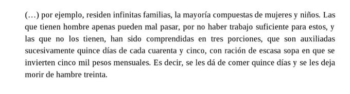

Los Hilos de Monik
La guerra y la muerte
Publicado el 21 de septembre de 2020 - 13 tweets - Hilo original en Twitter
1
A muchos les gusta contar las guerras como aventuras épicas, llenas de heroísmo.
Pero las guerras dejan muerte y desolación a su paso.
Y usualmente, la mayoría de las víctimas son mujeres, ancianos y niños.
En Cuba también ha sucedido. Hoy te pondré algunos ejemplos.
2
Al estallar la guerra en 1868, el capitán general de Cuba era Francisco Lersundi, quien tenía bajo sus órdenes a los generales Blas Villate (conde Valmaseda) y Valeriano Weyler.
La Creciente de Valmaseda fue (violenta) una campaña de pacificación que tuvo lugar de 1869-1871.
3
El 4 de abril de 1869 se emite el Bando de Valmaseda. Entre otras cosas, autorizaba a pasar por las armas a los hombres de +15 años fuera de su finca sin justificación, a quemar caseríos que no tuvieran bandera blanca y a reconcentrar a mujeres encontradas fuera de sus fincas
4
Esto trajo excesos. Aquí algunos:
"El baile de Guáimaro"
Un grupo de Voluntarios capturaron a mujeres e intentaron que dieran vivas a España. Se negaron y por ello las azotaron mientras las conducían al pueblo. Al llegar, Weyler las obligó a caminar sobre brasas encendidas.
5
"Muerte de parientes de revolucionarios"
A la esposa de Salomé Marrero la acuchillaron junto a su bebé y dejaron el cuerpo en posición de lactar.
Las hermanas Juana y Mercedes Mora murieron a machetazos junto a sus hijos de 14, 12, 8 y 2 años cuando se escondían en un bohío.
6
La familia del Coronel Juan Cintras (17 personas, todos mujeres y niños) también murieron a machetazos en su casa.
Un joven llamado Juan Bautista Arevich fue quemado vivo en Baire.
21 mujeres y niños murieron a bayonetazos en Bijagual
7
La hermana del Teniente José Torres fue degollada. Dejaron su cuerpo en el camino de Cauto, con cepos puestos.
También en Cauto otras dos mujeres, Rosa Cabrales y Caridad Puig, fueron violadas y asesinadas.
30 mujeres y niñas fueron violadas en un día en Jiguaní.
8
40 mujeres fueron fusiladas en Cauto del Paso. Junto a ellas, un oficial español que se negó a dispararles.
Maria Borrero y Luisa Rivero fueron ahorcadas en Guisa. A sus pies, dejaron a los hijos mutilados de esta última.
9
La columna Cazadores de Valmaseda interceptó una ranchería, donde mataron 2 sobrinos de Francisco Vicente Aguilera. También apresaron al hacendado José Palma y a su hija Herminia. A ella y otras mujeres las desnudaron y azotaron para obligarlas a caminar entre las tropas...
10
...A Herminia la violaron a la vista de su padre. Ella murió de peritonitis.
La hermana de Cristóbal Rodríguez fue ahorcada en represalia por una batalla que su hermano ganó.
Al entrar a Las Villas, se condenó a muerte a 30 hombres y 10 mujeres, solo para dar escarmiento.
11
Y por supuesto, las reconcentración de campesinos.
He aquí las condiciones
12
No puedo atestiguar la veracidad de todos estos casos, ya que casi no hay bibliografía al respecto. Los nombres que les dejé son citados por Emilio Roig en un texto de 1935. Pero vistas las crueldades de otras guerras, no creo que esté muy lejos de la realidad.
13
Hechos más conocidos de esta etapa son el presidio de José Martí, el fusilamiento de los 8 estudiantes de medicina y de Juan Clemente Zenea, y el incidente del Virginius, en el que 53 personas fueron fusiladas.
Todo esto que conté (y más) pasó en el período de 2 años.